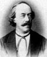
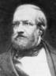
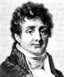
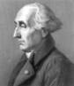

Klein's Adviser 1:

Julius
Plücker
Ph.D. Philipps-Universität Marburg 1823 
Julius Plücker was educated at Heidelberg,
Berlin and Paris.
He made important contributions to analytic geometry and physics.
Plucker's Adviser :
Christian Ludwig Gerling
Ph.D. Georg-August-Universität
Göttingen 1812
Dissertation:
Methodi proiectionis orthographicae usum ad calculos parallacticos
facilitandos explicavit simulque eclipsin solarem die
He was a student of the mathematician Johann Carl Friedrich Gauß. Since 1817 he
worked as an astronomer in Marburg.
Gerling's Adviser:
 Johann Carl
Friedrich Gauß Johann Carl
Friedrich Gauß
( > 50000 descendants)
Ph.D. Universität Helmstedt 1799
At the age of seven, Carl Friedrich Gauß started
elementary school, and his potential was noticed almost immediately. His
teacher, Büttner, and his assistant, Martin Bartels, were amazed when
Gauss summed the integers from 1 to 100 instantly by spotting that the sum
was 50 pairs of numbers each pair summing to 101.
In 1798, he had made one of his most important discoveries - the
construction of a regular 17-gon by
ruler and compasses
This was the most major advance in this field since the time of Greek
mathematics and was published as Section VII of Gauss's famous work,
Disquisitiones Arithmeticae. He published his second book, Theoria
motus corporum coelestium in sectionibus conicis Solem ambientium, in
1809, a major two volume treatise on the motion of celestial bodies. In
the first volume he discussed
differential equations,
conic sections
and elliptic orbits, while in the second volume, the main part of the
work, he showed how to estimate and then to refine the estimation of a
planet's orbit.
Gauss's Adviser:
 Johann
Friedrich Pfaff Johann
Friedrich Pfaff
Ph.D. Georg-August-Universität Göttingen
1786
Pfaff's inaugural dissertation was titled Programma
inaugurale in quo peculiarem differentialia investigandi rationem ex
theoria functionum deducit. It investigates the use of some functional
equations in order to calculate the differentials of logarithmic and
trigonometrical functions as well as the binomial expansion and
Taylor formula. Pfaff did important work in analysis working on
partial differential
equations,
special functions
and the theory of series. He developed
Taylor's Theorem using the form with remainder as given by
Lagrange. In 1810 he contributed to the solution of a problem due to
Gauss concerning the ellipse of greatest area which could be drawn
inside a given quadrilateral.
Pfaff's Adviser 1:
 Abraham
Gotthelf Kästner Abraham
Gotthelf Kästner
Ph.D. Universität Leipzig 1739
Perhaps the most important feature of Kästner's
contributions was his interest in the parallel postulate which indirectly
influenced
Bolyai and
Lobachevsky too. Kästner taught
Bolyai's father and J M C Bartels, one of Kästner's students, taught
Lobachevsky.
Pfaff's Adviser 2:
Johann Elert Bode
Ph.D. Handelsakademie Hamburg
Kästner's Adviser:
Christian August Hausen
Ph.D. Martin-Luther-Universität Halle-Wittenberg
1713
Hausen's Adviser 1:
Johann Christoph Wichmannshausen
Ph.D. Universität Leipzig
1685
Hausen's Adviser 2:
Johann Andreas Planer
Medicinae Dr. Eberhard-Karls-Universität Tübingen
1709
Planer's Adviser 1:
Johann Pasch
Magister Artium Martin-Luther-Universität Halle-Wittenberg
1683
Planer's Adviser 2:
Rudolf Jakob Camerarius
Medicinae Dr. Eberhard-Karls-Universität Tübingen
1684, 1686
Camerarius' Adviser 1:
Georg Balthasar Metzger
Medicinae Dr. Friedrich-Schiller-Universität Jena
1644
Universität Basel
1650
|
Metzger's Adviser 1:
Johann Georg Macasius
Medicinae Dr. Friedrich-Schiller-Universität Jena
1638, 1640
Macasius' Adviser 1:
Johannes Musaeus
Magister Artium Universität
Erfurt 1634
Musaeus' Adviser:
Georg Großhain
Magister Artium Martin-Luther-Universität Halle-Wittenberg 1629
|
Metzger's Adviser 2:
Emmanuel Stupanus
Medicinae Dr.
Universität Basel 1613
Stupanus' Adviser:
Petrus Ryff
Medicinae Dr.
Universität Basel 1584
Ryff's Adviser:
Theodor Zwinger
Magister Artium
Collège de France 1553

Zwinger's Adviser:
Peter Ramus
Artium Liberalium Magister
Collège de Navarre 1536
Ramus' Adviser 1:
Johann Sturm
Magister Artium
Université Catholique de Louvain 1527
Sturm's Adviser 1:
Nicolas Clénard
Magister Artium, Theol. Dr.
Université Catholique de Louvain 1515, 1521
Sturm's Adviser 2:
Johannes Winter von Andernach
Magister Artium
Université Catholique de Louvain
1527,
Med. Dr.
Collège de Tréguier
1532
von Andernach's Adviser 1:
Rutger Rescius
Artium Baccalaureus
Université de Paris
1513
Rescius' Adviser:
Girolamo Aleandro
Magister Artium, Theol. Dr.
Università di Padova
1499, 1508
Aleandro's Adviser:
Scipione Fortiguerra
Magister Artium
Università di Firenze
1493
Fortiguerra's Adviser:
Angelo Poliziano
Magister Artium
Università di Firenze
1477
Interestingly, Poliziano is an adviser of
Michelangelo Buonarroti, Baccalaureus Artium Università di Firenze 1492.
Poliziano's Adviser:
Marsilio Ficino
Magister Artium
Università di Firenze
1462
Ficino's Adviser:
Johannes Argyropoulos
Theol. Dr.
Università di Padova
1444
Interestingly, Argyropoulos is an adviser of
Leonardo da Vinci, Baccalaureus Artium Università di Firenze 1471.
|
|
|
Klein's Adviser 2:
Rudolf
Otto Sigismund Lipschitz
Ph.D. Universität
Berlin 1853
Rudolf
Lipschitz worked on quadratic differential forms and mechanics. Lipschitz
rediscovered the Clifford algebras and was the first to apply them to represent
rotations of Euclidean spaces, thus introducing the spin groups Spin(n).
Lipschitz's Adviser:
Johann Peter Gustav Lejeune Dirichlet
Ph.D. Rheinische Friedrich-Wilhelms-Universität Bonn (Hon.)
1827
Dirichlet proved in 1826
that in any arithmetic progression with first term coprime to the difference
there are infinitely many primes. Dirichlet is best known for his papers on
conditions for the convergence of trigonometric series and the use of the
series to represent arbitrary functions.
|
Dirichlet's Adviser 1:
 Siméon-Denis
Poisson Siméon-Denis
Poisson ( > 60000 descendants)
École Polytechnique
Poisson published between 300 and 400 mathematical
works including applications to electricity and magnetism, and
astronomy. His Traité de mécanique published in 1811 and again
in 1833 was the standard work on mechanics for many years. His name is attached to a wide area of ideas,
for example:- Poisson's distribution,
Poisson's integral, Poisson's equation in potential theory, Poisson
brackets in differential equations, Poisson's ratio in elasticity, and
Poisson's constant in electricity.
|
Dirichlet's Adviser 2:
Jean-Baptiste
Joseph Fourier
École Polytechnique
Fourier
studied the mathematical theory of heat conduction. He established the partial
differential equation governing heat diffusion and solved it by using infinite
series of trigonometric functions.
|
Poisson's
and Fourier's Adviser:
Joseph-Louis Lagrange
(or, perhaps, Giuseppe Lodovico Lagrangia )
Lagrange excelled in many
topics: astronomy, the stability of the solar system, mechanics, dynamics,
fluid mechanics, probability, and the foundations of the calculus. He also
worked on number theory proving in 1770 that every positive integer is the sum
of four squares. In 1771 he proved Wilson's theorem (John Wilson)
(first stated without proof by Waring) that n is prime if and only if (n-1)!+1
is divisible by n. In 1770 he also presented his important work Réflexions sur
la résolution algébrique des équations which made a fundamental investigation
of why equations of degrees up to 4 could be solved by radicals. The paper is
the first to consider the roots of a equation as abstract quantities rather
than having numerical values. He studied permutations of the roots and,
although he does not compose permutations in the paper, it can be considered as
a first step in the development of group theory continued by Ruffini, Galois
and Cauchy.
Lagrange's Adviser:
 Leonhard
Euler Leonhard
Euler
Ph.D. Universität Basel 1726
Euler was the most prolific writer of mathematics of all
time.
He made decisive and formative contributions to geometry, calculus and
number theory. He integrated
Leibniz's differential calculus and Newton's method of fluxions into
mathematical analysis. He introduced
beta and
gamma functions,
and
integrating factors
for differential equations. He studied continuum mechanics, lunar theory
with
Clairaut, the
three body problem,
elasticity, acoustics, the wave theory of light, hydraulics, and music. He
laid the foundation of analytical mechanics, especially in his Theory
of the Motions of Rigid Bodies (1765).
We owe to Euler the notation f(x) for a function (1734),
e for the base of natural logs (1727), i for the square root of
-1 (1777), p for pi,
for summation (1755), the notation for
finite differences  y and
2y and many
others. y and
2y and many
others.
In 1737 he proved the connection of the zeta function with the series of
prime numbers.
One could claim that mathematical analysis began with Euler. In 1748 in
Introductio in analysin infinitorum Euler made ideas of
Johann Bernoulli more precise in defining a function, and he stated
that mathematical analysis was the study of functions. In Introductio
in analysin infinitorum Euler dealt with logarithms. He published his
full theory of logarithms of complex numbers in 1751.
The Mathematics Genealogy project lists Euler as Lagrange's adviser. Indeed, Euler did give substantial advice to Lagrange, although all of it was by mail. Lagrange studied Euler's work and corresponded extensively with him during the time when he wrote his early papers. Euler was also important in promoting Lagrange's career. This is why Euler is often viewed as his "adviser," even though Euler was in Berlin and Lagrange was in Torino.
Euler's Adviser:
 Johann
Bernoulli Johann
Bernoulli
1694
Bernoulli was
de l'Hôpital's tutor. However it did assure
de l'Hôpital of a place in the history of mathematics since he
published the first calculus book Analyse des infiniment petits pour
l'intelligence des lignes courbes (1696) which was based on the
lessons that Johann Bernoulli sent to him (without acknowledging that
fact). The well-known
de l'Hôpital's rule is contained in this calculus book and it is
therefore a result of Johann Bernoulli. Bernoulli also made important
contributions to mechanics with his work on kinetic energy.
Johann Bernoulli's Adviser:
 Jacob
Bernoulli Jacob
Bernoulli
1676
Jacob Bernoulli's first important contributions were a
pamphlet on the parallels of logic and algebra published in 1685, work on
probability
in 1685 and geometry in 1687. His geometry result gave a construction to
divide any triangle into four equal parts with two perpendicular lines.
By 1689 he had published important work on infinite series and published
his law of large numbers in probability theory. The interpretation of
probability as relative-frequency says that if an experiment is repeated a
large number of times then the relative frequency with which an event
occurs equals the probability of the event. The law of large numbers is a
mathematical interpretation of this result. Jacob Bernoulli published five
treatises on infinite series between 1682 and 1704. The first two of these
contained many results, such as fundamental result that
(1/n) diverges, which Bernoulli
believed were new but they had actually been proved by
Mengoli 40 years earlier. Bernoulli could not find a closed form for
(1/n2) but he did show
that it converged to a finite limit less than 2.
Euler was the first to find the sum of this series in 1737. Bernoulli
also studied the exponential series which came out of examining compound
interest.
In May 1690 in a paper published in Acta Eruditorum, Jacob
Bernoulli showed that the problem of determining the isochrone is
equivalent to solving a first-order nonlinear
differential
equation.

Jacob Bernoulli's Adviser: Gottfried Wilhelm von Leibniz
Dr. jur. Universität Altdorf
1667
Gottfried Leibniz developed the present-day notation for the differential and integral calculus though he never thought of the derivative as a limit. His philosophy is also important and he invented an early calculating machine.
Leibniz's Adviser I:
Erhard Weigel
Ph.D. Universität Leipzig
1650

Leibniz's Adviser II: Christiaan Huygens
Universiteit Leiden
Christiaan Huygens patented the first pendulum clock, which greatly increased the accuracy of time measurement. He laid the foundations of mechanics and also worked on astronomy and probability.
|